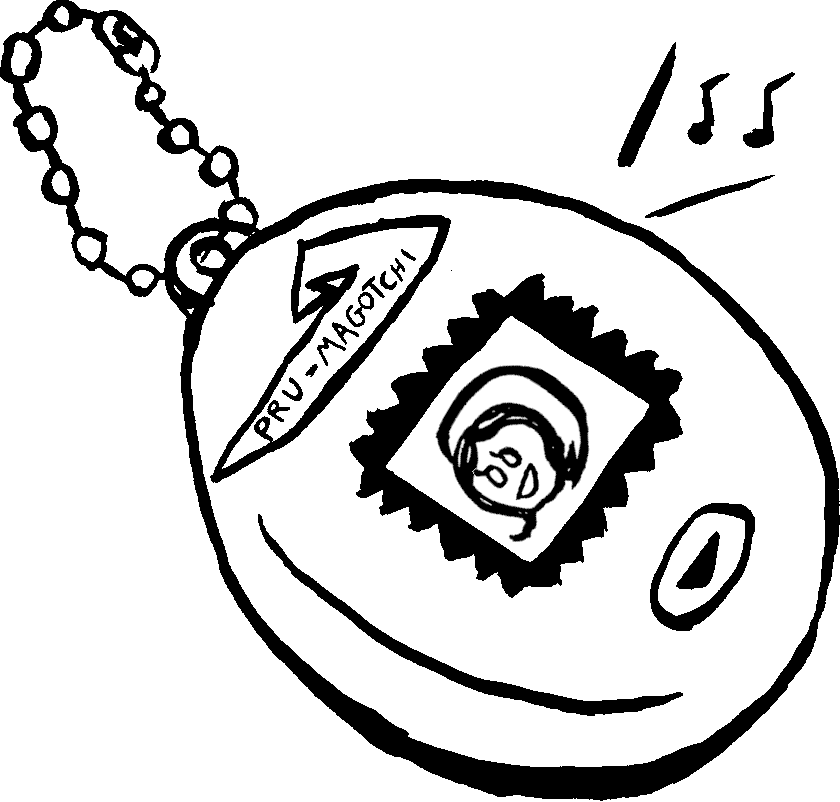

Happy Valentines...
First of all, for those who have been waiting, my novel More Bugs is now available as an ebook from the publisher! Because it's published through a UK-based micropress, and also due to Brexit and shit, getting print copies outside of the UK was sometimes costly or complicated in a non-ideal way. Based on how I read, I'm still biased towards the paperback, which I think is gorgeous due to the layout work by my publisher as well as the wraparound cover illustrations by Lily Blakely, but with an ebook you can instantly screencap or copy paste the parts that make you think I'm a literary genius, so who's to say which is better?
Valentine's day is of course a wonderful day of love, with extraterrestrial insect women and otherwise... I just finished having a glass of wine, some pasta, and mozzarella-smothered garlic bread from our local takeaway, along with some chocolates. A kind of low-key celebration because of all that's been going on (my tooth socket is not closed up enough that I could enjoy going out for a nice steak or something), but in a weird way going through so much expected and not body shit in the past year has made me feel even more secure in my relationship, even if like, the economy and world politics can feel very de-stabilizing. Stephen and I are getting increasingly esoteric in our ongoing rom-com investigations, recently watching Reelshort original Rock On! Band Beauty in Disguise, a film so cheaply and quickly made you cannot yet log it on Letterboxd. We have been watching a few of these, and they're gradually coalescing into Yet Another blog post about romance/eroticism inside my mind...
Valentine's day is also the day for Domino Club FANTA projects as well. This is a fun Domino Club tradition where as a sort of secret santa thing we're all assigned a random member to make fanart of one of their games. This year I got Emma and naturally made a Tamagotchi-style tribute to her character Pru from dithercore classic Stairdown!

And yes, because I've been practicing inkbrush painting, including using a Japanese ink stick and ink stone, I can put these black and white projects on my fussy little black and white blog.
Here's a few other doodles:
It feels good to doodle with the inkbrush, or even just make shapes and lines at random.
Over the next month I plan to do another revision pass on Novel/la 2, as well as work out my longer thoughts about the fallacy of "attention economy" and attending to excess in indie games and culture more broadly. I'll be giving a talk about it at the Glasgow Games Soapbox in March and then immediately going to a Machine Girl concert the next day.
So, hang in there, as they say, it takes a nation of millenials to destroy a nation of millions...